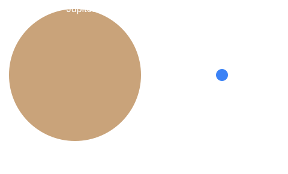

Jupiter Facts
- Diameter: 139,820 km, the largest planet.
- Distance from the Sun: about 778.5 million km.
- One year: about 11.9 Earth years.
- One day: just 9 hours 56 minutes.
- Cloud top temperature: about -110 °C.
- Moons: more than 90, including Ganymede, the biggest moon in the solar system.
- The Great Red Spot is a storm bigger than Earth.
Spin Speed Control
Jupiter spins fast. Change how fast with the slider.
How Big Is It?
